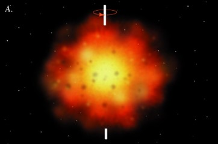
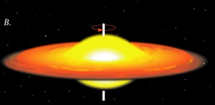
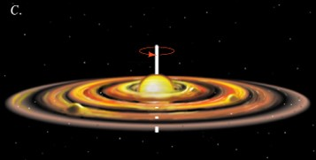
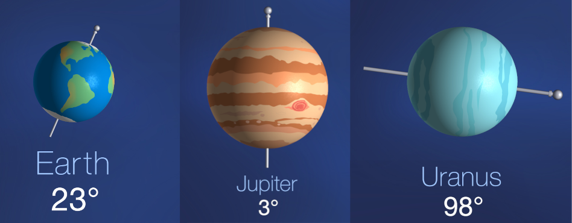
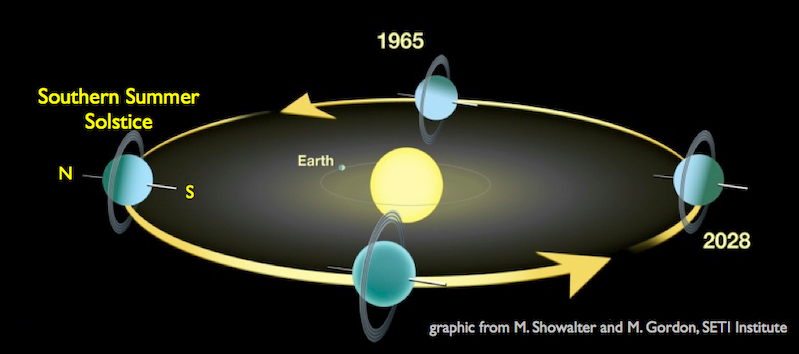
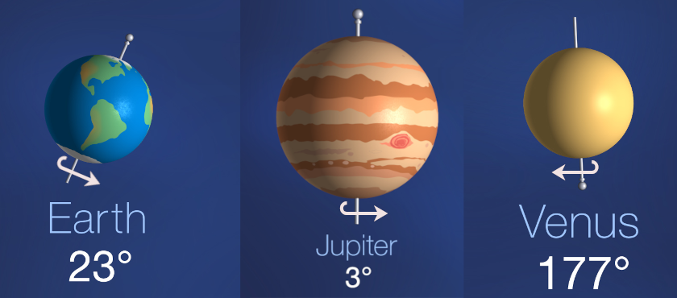
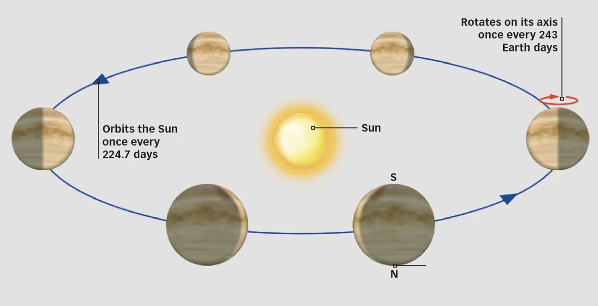
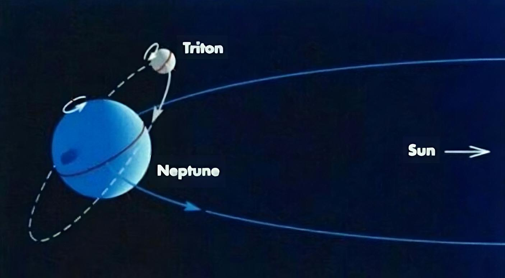
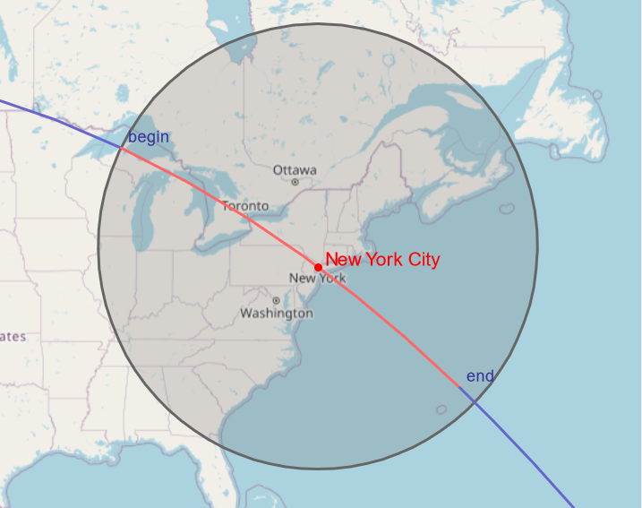

Why is Mars's Moon Traveling the Wrong Way?
Azeem (azeemba.com)
Oct 12, 2024
View from the Curiosity rover on Mars.
- Phobos, the closer moon, is rising from the west
- Deimos, the farther moon, is rising from the east
Orbital Direction 🔄
Almost everything in the Solar System orbits in the same direction!
Why?



Known Retrograde Weirdos
Uranus

Known Retrograde Weirdos
Uranus

Known Retrograde Weirdos
Venus

Known Retrograde Weirdos
Venus

Known Retrograde Weirdos
Triton

Known Retrograde Weirdos
- Uranus
- Venus
- Triton
- ...And that's it!
ESA's orbiter Mars Express shows the two moons orbiting in the same direction!
Apparent Motion
Apparent Motion
Apparent Motion
- Blue car: Rotation of Mars
- Red Car: Phobos
- Green Car: Deimos
Deimos: Like Our Moon
Phobos Rises Itself
Phobos Rises Itself

Like the International Space Station!
🔄
- Deimos rises in the east because of Mars's rotation
- Phobos rises in the west because of its own orbit
- So Martian moons have all the possibilities covered?
Well, there is a third possibility!
Rise and Set in the East
Rise and Set in the East
Alas, no such configuration in the Solar System.
Except...Mercury
Except...Mercury
- We have Mars beat
- But Mars wasn't the real competition!